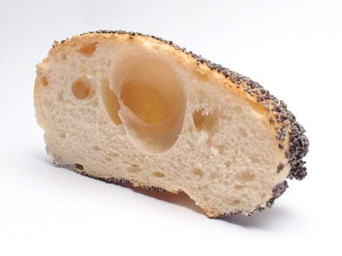
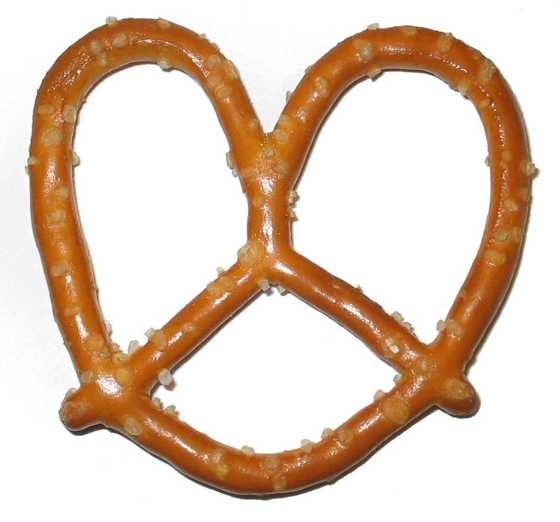
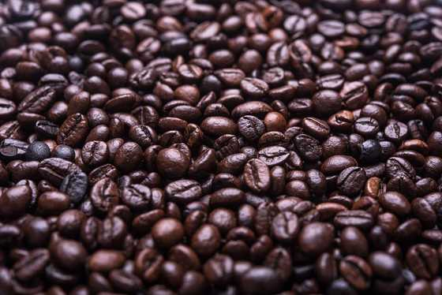

パン屋 / 宮城県岩沼市
OLIMBAパン工房 オリンバ
厳しい環境でも、しなやかにわが子を育てる母ヒョウのように。毎日のパンを、やさしくまっすぐに焼く住宅街のパン屋です。
お店の想い
店名の由来
「OLIMBA(オリンバ)」は、ザンビアの渓谷に暮らす一頭の母ヒョウの名前だと、ブログ記事「トリさんログ」で紹介されています。厳しい環境の中でも柔軟に子を育てる姿に心を動かされ、店名にしたとのことです。
岩沼市三色吉の静かな住宅街、公園の近くに店を構え、駐車場もあります。ご夫婦で営むやさしい雰囲気のお店として紹介されています。お子さまにはラスクを無料でプレゼントしているそうです。

出典:食べログ・トリさんログ(torisanlog.com)・Instagram。この文章は公開情報をもとにした試作で、お店の公式な文章ではありません。
パン
紹介されている主な品(売り切れ次第終了とされています)
営業時間・定休日・価格・最新のラインナップ:準備中(ご来店前にInstagramでご確認ください)







口コミ
以下は創作のイメージ例で、実在のお客様の声ではありません
イメージ例
住宅街の落ち着いた雰囲気で、ゆっくり選べました。クロワッサンの香ばしさが印象的です。
イメージ例
子どもにもらったラスクがうれしそうで、また行きたいと言っています。
イメージ例
塩パンとクロックムッシュを朝のうちに買いに行くのが楽しみです。
写真クレジット
- croissant-whole.jpg:「Croissant, whole」 SKopp / CC BY-SA 3.0
- croissant-section.jpg:「Croissant, cross section」 SKopp / CC BY-SA 3.0
- croissant-iso.jpg:「Croissant Isolated On White Background」 personalgraphic.official / CC0 1.0
- roll-hole.jpg:「Bread roll with crumb hole」 SKopp / CC BY-SA 3.0
- roll-poppy.jpg:「Bread roll with crumb hole, frontal view」 SKopp / CC BY-SA 3.0
- crumb-black.jpg:「Sourdoughbreadcrumb」 Nleamy / CC BY 2.5
- pretzel.jpg:「Pretzel」 作者表記なし(自己公開作品) / パブリックドメイン
- pretzel-black.jpg:「Another edible pretzel (-2,3,7) link」 Alejo7797 / CC0 1.0
- kaiser.jpg:「Kaisersemmel-」 Kobako / CC BY-SA 2.5
- beans-white.jpg:「Coffee Beans」 megforce1 / CC0 1.0
- beans-close.jpg:「Beans (42182293175)」 Skitterphoto / CC0 1.0
- beans-pile.jpg:「A lot of coffee beans」 www.Pixel.la Free Stock Photos / CC0 1.0